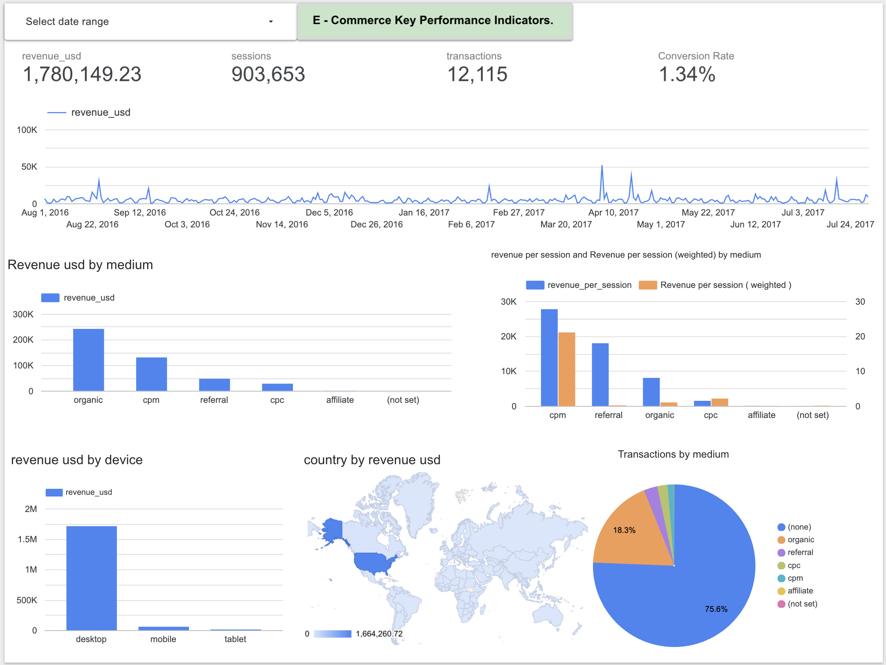
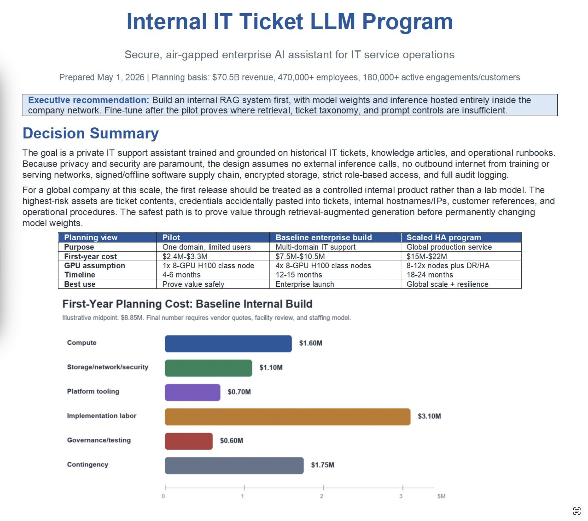

Casey Grewen
Data Analyst | SQL | Python | BigQuery | Looker | Machine Learning
I am a data analyst focused on turning raw data into clear, useful business insights. My portfolio includes SQL, Python, dashboard development, machine learning, and data storytelling projects that demonstrate practical analytical problem-solving.
Ecommerce Revenue Optimization Analysis
An end-to-end analytics project using the Google Analytics public ecommerce dataset in BigQuery to evaluate channel, device, and traffic-source performance. The goal was to identify which acquisition paths generated the strongest revenue outcomes and where conversion opportunities existed.

Dashboard showing ecommerce performance metrics and channel-level insights built in Looker Studio.
Business Question
Which marketing channels, traffic sources, and device categories drive the most ecommerce revenue, and where should a business focus optimization efforts to improve conversions and return on ad spend?
What I Did
- Queried and analyzed ecommerce session data in BigQuery
- Cleaned and organized performance metrics for reporting
- Compared revenue, transactions, and conversion behavior by channel and device
- Built a dashboard in Looker Studio to visualize business KPIs
- Translated findings into practical revenue optimization recommendations
Tools & Skills
- SQL (BigQuery)
- Data Cleaning
- KPI Analysis
- Conversion Analysis
- Revenue Optimization
- Looker Studio
Project Outcome
This project demonstrates my ability to work with raw analytics data, answer business questions with SQL, build clear dashboards, and communicate insights that support data-driven decision-making.
View Project RepositoryHeart Failure Prediction Model
A machine learning project analyzing clinical health data to predict the likelihood of heart disease. The notebook explores key cardiovascular risk factors, builds predictive models, and uses SHAP explainability techniques to interpret which features have the greatest effect on model predictions.

SHAP summary plot showing the relative influence of clinical features on heart disease prediction outcomes.
Project Goals
- Explore clinical health data and cardiovascular risk factors
- Build machine learning models for heart disease prediction
- Evaluate model performance and feature importance
- Interpret predictions using SHAP explainability techniques
Tools & Skills
- Python
- Pandas
- Scikit-Learn
- Machine Learning
- SHAP Explainability
- Data Visualization
Project Insight
The SHAP analysis highlights that ST slope, exercise-induced angina, and Oldpeak were among the most influential predictors in the model. This project demonstrates not only predictive modeling skills, but also the ability to explain model behavior in a clear, practical way.
View Kaggle NotebookInternal IT Ticket LLM System
Designed a secure, internal-only large language model system for enterprise IT ticket analysis. Built with air-gapped infrastructure, data governance pipelines, RAG architecture, fine-tuning strategy, audit logging, and secure internal access.

Project Goals
- Design a private, internal-only LLM system for IT ticket analysis
- Protect sensitive company data through air-gapped infrastructure and access controls
- Use RAG to retrieve relevant internal ticket history and documentation
- Create a fine-tuning strategy using LoRA or QLoRA
- Build an audit-ready system with logging, feedback, and governance controls
Tools & Skills
- LLM Architecture
- RAG Design
- Data Governance
- Cybersecurity Planning
- Python
- Vector Databases
- FastAPI / Streamlit
Project Insight
This project demonstrates how enterprise AI systems can be designed with privacy, security, internal deployment, and responsible model governance as the foundation.
View Project DocumentPowerball Data Analysis (Winning Numbers Strategy)
A fun but data-driven Python project exploring historical Powerball results to identify number frequency patterns and examine whether statistical trends appear across past drawings. While the lottery is random, this project demonstrates real skills in data exploration, visualization, and storytelling.
Project Goals
- Analyze historical lottery number distributions
- Identify repeated frequency trends and number patterns
- Evaluate whether “hot” or “cold” numbers appear in the data
- Present results through engaging visual analysis in Python
Tools & Skills
- Python
- Pandas
- Data Analysis
- Data Visualization
- Statistical Thinking
Project Insight
Yes, this project analyzes “winning lottery numbers,” partly as a fun attention-grabber, but it still demonstrates real analytical ability: cleaning data, finding patterns, visualizing results, and turning a playful question into a polished analysis project.
View Project Repository View Notebook File